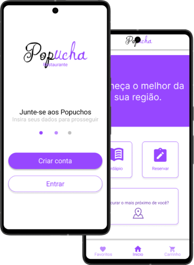

Meu papel:
Designer de Ux Projetando um aplicativo para Popucha desde a concepção até a entrega.
Responsabilidades:
Condução de entrevistas, wireframes de papel e digitais, prototipagem de baixa e alta fidelidade, realização de estudos de usabilidade, consideração de acessibilidade e iteração de designs.
Julho de 2023 a outubro de 2023
